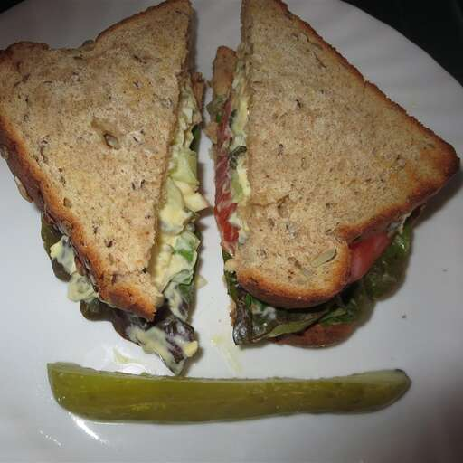

Egg Salad Sandwich

Description
This egg salad sandwich is a zippy change from an ordinary egg salad sandwich
ingredients
- 2 tablespoons light mayonnaise
- 1 tablespoon minced celery
- 2 teaspoon capers
- 2 teaspoon minced chives
- 1 dash hot pepper sauce
- 2 slices of brown bread
- 1 teaspoon butter, or taste
- red lettuce leaf
- 1 tomato, thinly sliced
Steps to Prepare
- Mix pickle eggs, mayonnaise, celery, dill pickle, capers,
chives, pickled eggs juice, and hot pepper
sauce together in a bowl.
- Toast bread lightly. Spread butter on one side of each slice.
Layer lettuce and tomato on one side of bread, and spread egg
salad
on the other slice. Press sandwich together and cut it half.